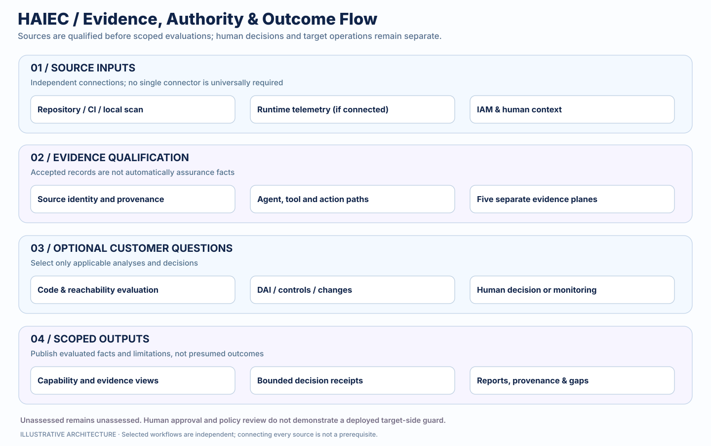
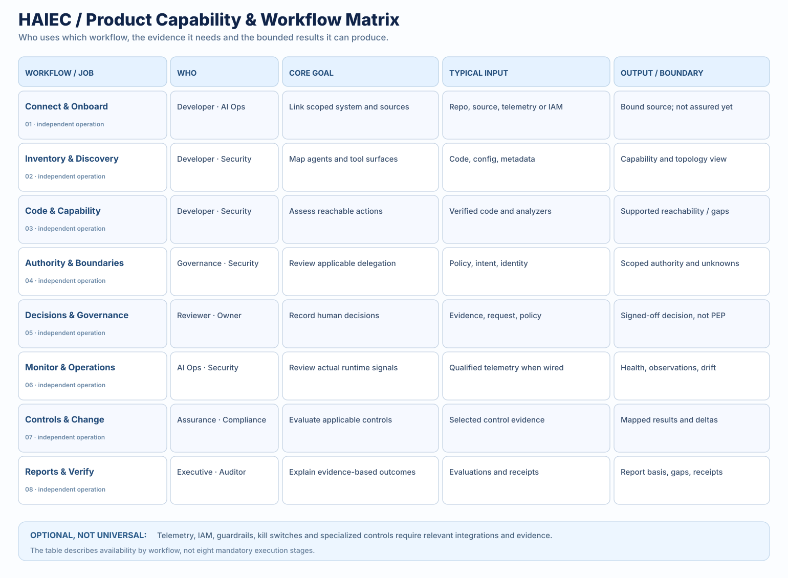

Discover
Identify supported systems, agents, identities, tools and reachable action surfaces. Show coverage and unknowns.
AI agents can call APIs, access sensitive records and trigger changes. HAIEC traces supported action paths across code, identity, authority and observed evidence, so teams can distinguish what is possible, what is permitted and what is actually proven.
DETERMINISTIC EVALUATION · EXPLICIT EVIDENCE GAPS · ACCOUNTABLE HUMAN DECISIONS

A scanner can show that code can call a refund API. IAM can show what a credential permits. Policy can define what needs approval. A log may show a call. None alone proves the complete delegation and consequence story.
Explore why technically valid access and a correct security scan do not establish that an agent was delegated a business choice. This animation illustrates evidence questions only; it is not an actual test, live assessment, refund transaction or production control.
Source analysis may establish a supported callable path. It does not establish that a payment was executed or that its recipient was authorized.
Click the steps to reveal the distinction. The five HAIEC evidence planes are independent comparisons; these four interactions are editorial storytelling, not the evaluation workflow.
Choose the capability that answers your question. Each one has its own role, evidence and integration requirements. This is not a mandatory six-step deployment pipeline.
Identify supported systems, agents, identities, tools and reachable action surfaces. Show coverage and unknowns.
Compare qualified policy, grant, code and observation evidence in bounded assurance findings.
Record scoped human decisions, conditions and receipts where configured.
Follow connected source changes and supported runtime signals within their coverage.
Integrate supported execution controls at customer boundaries; verify target-side effectiveness separately.
Inspect evaluated reports, provenance, supporting artifacts and receipts within their exact scope.

What was requested, authorized, effectively granted, code-capable and observed?
HAIEC compares these independently qualified dimensions against a bounded question. A detected action path is not automatically delegated, executed or proven to have changed a target.
Explore the methodology →Illustrative example: A support agent can call a refund endpoint, but the evidence does not establish delegated authority to choose the recipient. That is a review question, not a universal safe verdict.
Connect the remote HAIEC MCP server once, then ask your compatible coding assistant to check what's available. The AI guides authorized tool calls; HAIEC's canonical evaluator owns the findings. A scoped HAIEC key and compatible client are required. Setup can report missing prerequisites rather than pretending to run a scan.
https://www.haiec.com/api/mcpRun HAIEC AI AssuranceAuthenticate with a scoped Bearer API key in your agent client's private connection settings, not this page or a chat prompt. The agent should run read-only preflight first. A verified source, eligible system, permissions and consent are needed for an actual scan.
Use the workspace, supported connected GitHub sources, Assurance API or MCP-enabled assistant. Extra runtime and authority evidence is added only when the decision requires it.
Monitoring and target enforcement depend on supported customer integrations; a decision receipt alone cannot stop a tool call.
System-level assurance, action and access evidence, deterministic evaluation and review artifacts form the HAIEC platform. Independent developer tools and specialized utilities address narrower questions without pretending to prove the entire operating system safe.
This grouped concept is a product navigation aid, not proof of a mandatory lifecycle.
These are connected modules of one platform, not unrelated subscriptions. Begin with your source and question; add qualified evidence where it changes the decision.
Identify supported systems, connected sources and action/access paths.
Source-visible security findings, technical action paths and coverage.
Compare authority, capability and qualified evidence with explicit limitations.
Review scoped decisions with accountability and supporting records.
Follow supported connected sources and runtime observations.
Return to exact evaluations, provenance and verifiable artifacts.
Static security analysis of AI applications and agent implementations.
Explore AI AppSec →Deterministic checks for cross-tenant boundary risks in MCP implementation.
Explore MCP security →Pattern-based selected prompt/input/output checks. Not full-model safety proof.
Explore LLMVerify →PR Compliance and SDK usage tracking, each with its own supported output.
Specific logs, questionnaires and evidence prompts. Framework mappings are not certification.
Connection-dependent safeguards and monitoring. No general-purpose automatic enforcement claim.
| Question | Path | What the output does not establish |
|---|---|---|
| What can this agent cause? | HAIEC Platform | Unknown evidence never becomes passed control. |
| Is the application code secure? | AI AppSec | Static findings do not prove execution. |
| Can MCP handling cross tenants? | MCP Tenant Isolation | Static checks do not prove every runtime boundary. |
| Does text match selected risk patterns? | LLMVerify | Pattern matches do not certify AI safety. |
| Do we need logs or compliance gap prompts? | Specialized tools | Logs and checklists alone are not platform assurance. |
If your client supports remote MCP servers, connect HAIEC with a securely stored API key. Then say Run HAIEC AI Assurance. Your agent checks readiness first; the preflight determines the eligible next action. This is not automatic repository access or evidence of a completed scan.